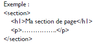
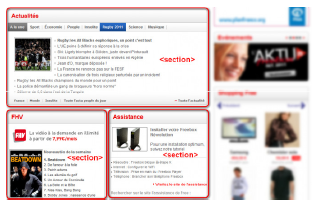
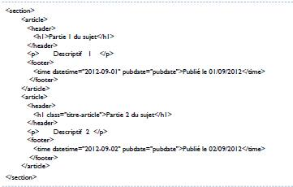
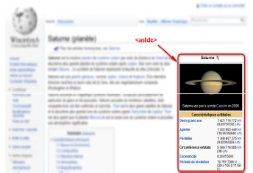
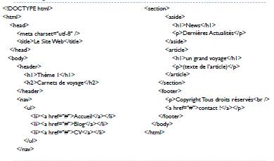

- Structure de base d'une page HTML5
- L'en-tête head et le corps body
- L'encodage (charset)
- Le titre principal de la page
- Les paragraphes
- La mise en forme du texte
- Les titres
- Les listes
- Les liens
- Insertion d'une image
- Les balises structurantes de HTML5
- Les balises de type block et inline
- Les balises universelles
- Les tableaux *Diviser un tableau *Fusionner un tableau
- Les objets de formulaire
- Les formats audio
- Les formats vidéo
- Une section de page:



- Informations complémentaires
La balise 'aside' est conçue pour contenir des informations complémentaires au document que l'on visualise.Ces informations sont généralement placées sur le côté (bien que ce ne soit pas une obligation).Il peut y avoir plusieurs blocs 'aside' dans la page.

Exemple:
